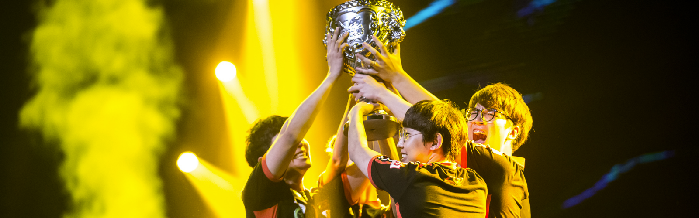
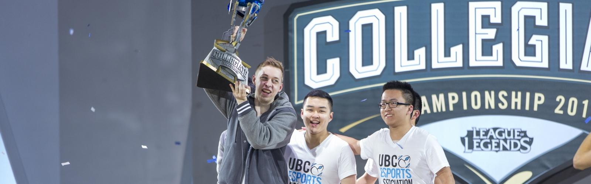
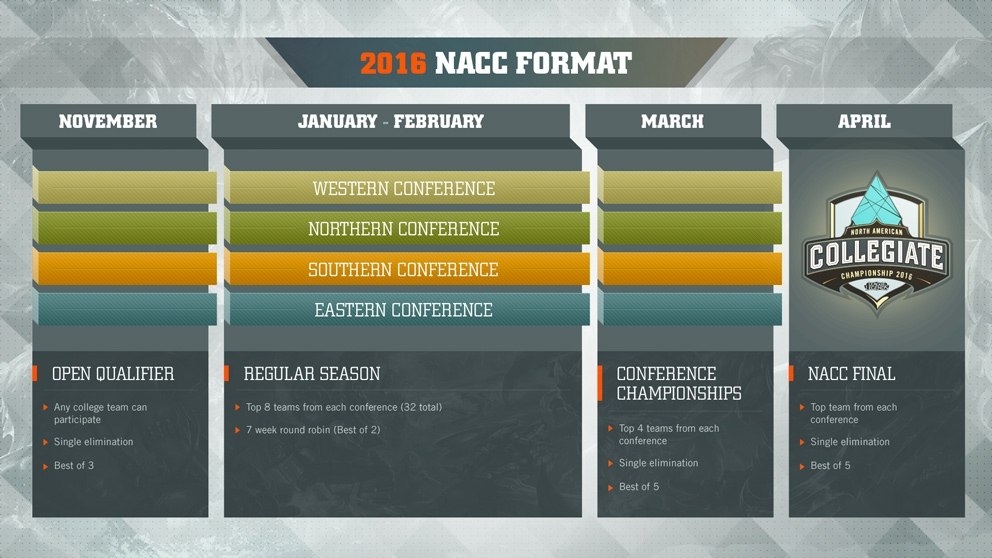

-

Worlds 2015 Power Rankings
And here we are at the 2015 World Championship, where we'll discover the best League of Legends teams in the World.
This time, we decided to do something different with Power Rankings. Since even among analysts, we have a hard time agreeing with numbered lists, we decided to tier teams based on overall perceived strength. And while there were certain disagreements about where certain teams lie (AHQ down, KOO up, CLG up, C9 down, etc), we all were fairly confident that this ranking augers just how far the competing teams will making in the tournament.
Let us know if you like the format, and give feedback on Power Rankings in the comments below, or on Twitter, where your submission will be disseminated into The Matrix.
The following people contributed to Worlds 2015 Power Rankings:
Alex Manisier, Christopher "Montecristo" Mykles, Ryanne "Froskurinn" Mohr, Carlos "H0tsawce" Bravo, Emily Rand, Nelson Sng, Leah "Riot SpiNN" Jackson, Jason "Riot Jayway" Wai, and Frank "Riot Mirhi" Fields.
-
Watch Legends Rising now!
Legends Rising goes beyond the game and explores the inspirations, fears, and inner workings of some of the world's most revered professional League of Legends players. These are their stories told from the inside.
In the first episode, two of the biggest names in professional League of Legends, Faker and Bjergsen, rise up to conquer their demons and face off during the 2015 Mid-Season Invitational. Witness a new side of each pro while exploring the pasts that helped shaped who they are now.
Each episode in the six-part series is now available. Head over to YouTube to catch them all.
-

Ask The Pros: H2K's kaSing
Ask The Pros is an ongoing series on Lolesports where we ask a pro player questions from the community.
The player then picks the next pro the community will get to ask questions. Be sure to follow us on Twitter to submit your questions for the next Q&A!
In our last Ask The Pros interview, we talked with Team Impulse's support Adrian "Adrian" Ma about his rollercoaster ride on TIP this year.
He also had a question for H2K's support Raymond "kaSing" Tsang.
Adrian: What do you want to improve on as an individual before Worlds?
kaSing: I want to have a good mindset and become a better player both physically and mentally
Going Pro.
Rymen: I want to go pro, but I'm still in school. How many hours per day should I play to become good enough?
K: I spent about seven or eight hours per day, and like 12 hours on the weekends. You have to be committed and have a positive mindset in order to even get close to finding teams and getting picked up.
Kevin: How did you come up with your pro name?
K: It's actually my Chinese name.
Tom: What do you think the UK needs to do to get more top talent into the LCS? Currently we're quite under-represented!
K: There's a lot of social pressure. Don't let anyone pressure what you do in life. Do what makes you feel happy about yourself and your future.
-

The NA Collegiate Championship is back!
This fall the North American Collegiate Championship (NACC) returns for its third season with a new format aimed at taking college esports to the next level. Learn more about this season’s changes and find out how your campus can get involved!
Last year was a huge milestone for college esports, with over 1,600 college teams and 300 schools from across the U.S. and Canada participating in the NACC. However, with so many teams competing, it was nearly impossible for you to watch, follow, and cheer for your favorite college teams throughout the season.
In order to improve this experience we’re running an open qualifier in November that will determine who the 32 best college teams are in North America. This way we can focus on top-tier collegiate play and provide you with more opportunities to follow and cheer on your favorite teams throughout the school year.
Read on to learn more about this year’s changes and how your campus can get involved!
What's the new format?

Any eligible college team can register to participate in the Open Qualifier in November. Split by region, the four qualifier brackets will determine the 8 teams that will represent each region in the 2016 NACC Regular Season. After each conference crowns their champion, the 4 best college teams in NA will battle it out live at the 2016 NACC Final!
What’s on the line?
As in years past, teams participating in the North American Collegiate Championship are competing for scholarships and bragging rights as best college team NA. Each player who earns a spot in the 2016 NACC Regular Season will be taking home a scholarship to further their education.
How do I get involved?
Look for an announcement on lolesports.com when registration opens on October 5th. It’s completely free to register and play. Each team must have 6 total eligible players to participate.
In order to be eligible, you must...
- be an enrolled college student in good standing at an accredited institution in the U.S. or Canada
- be at least 17 years old by November 1, 2015
- have a NA LoL account in good standing and eligible for ranked games
Need more info?
You can check out the complete rules for the 2016 North American Collegiate Championship here.
And don’t forget to visit lolesports.com on October 5 to register your team!
Good Luck!